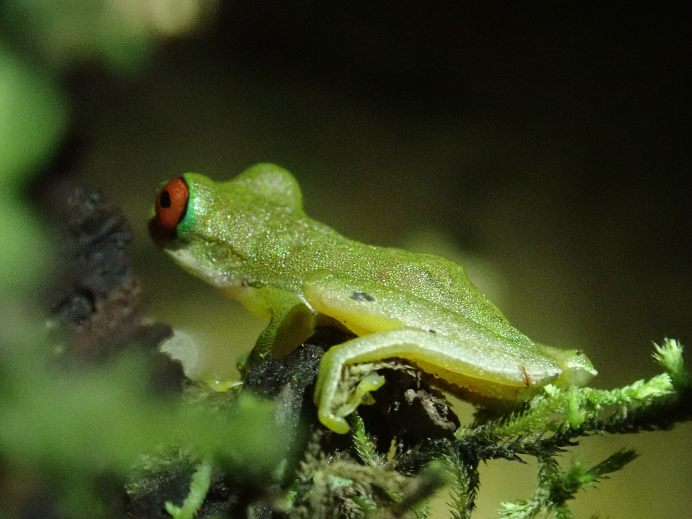
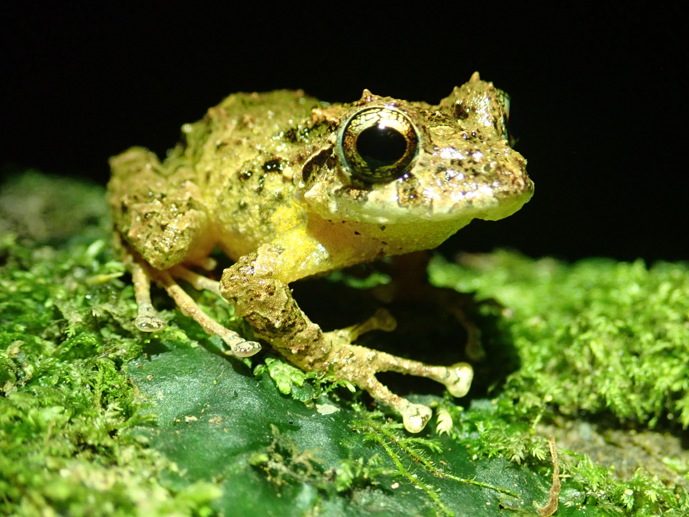
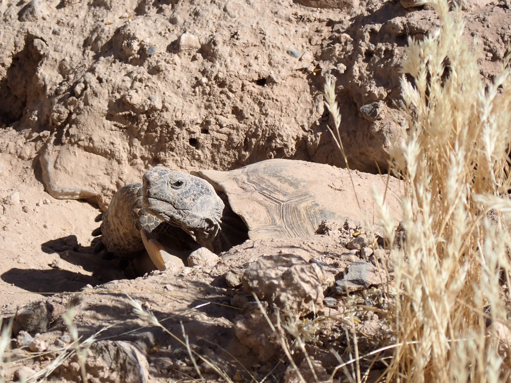
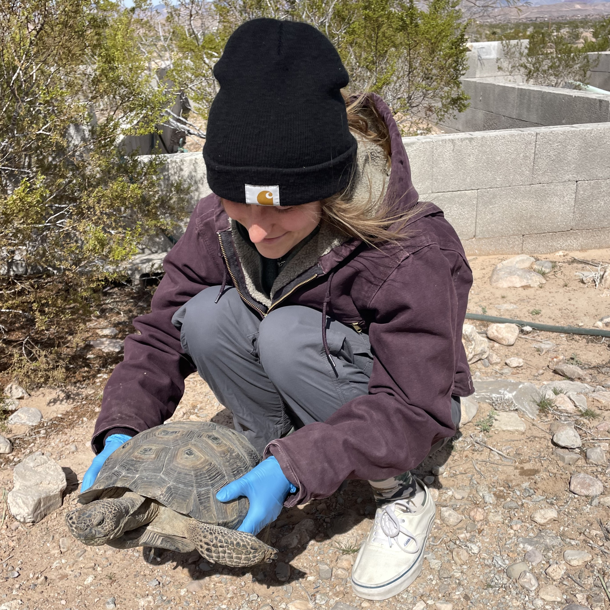

CURRENT RESEARCH
MS THESIS IN PARKINSON LABPAST RESEARCH
Anuran distribution and richness across an altitudinal gradient in tropical montane forests
As Neotropical communities rapidly respond to environmental and anthropogenic pressures, measuring species richness and abundance across elevational gradients provides insight into the health of the ecosystem. Anuran surveys were conducted across four of seven Holdridge life zones in Monteverde, Costa Rica, to compare with previous data from 2019.


EDUCATION
MS Biological Sciences
BSc General Biology
Clemson University (2025-)
University of California, San Diego (2019-2023)
WORK EXPERIENCE
2025 Desert Tortoise Monitoring Program, The Great Basin Institute
- Planned logistics for assigned 12km transects with QGIS
- Recruited and trained 24 technicians in LDS sampling and data collection protocols
- Conducted weekly QA/QC on transect and telemetry wildlife data in Access database
- Completes monthly, quarterly and annual reports for project partners
2024 Desert Tortoise Monitoring Program, The Great Basin Institute
- Managed transect and radio telemetry wildlife data in Access database
- Assisted project manager in training 50+ technicians in data collection protocols
- Organized digital and physical data per USFWS Data Management Plan
Dudek, Inc.
- Surveyed habitat for federally endangered wildlife and plant species
- Collected data in harsh environments (6-10 mi/day)
- Collaborated with biologists to complete presence/absence and clearance surveys according to USFWS protocols
Shurin Lab, University of California, San Dieigo
- Maintained open-air algae ponds (Nannochloropsis microalgae)
- Prepared metagenomic samples and conducted gravimetric analyses
FAIR Data Informatics Lab, UCSD Health
- Managed online database of funding opportunities for NIDDK researchers
- Designed and curated newsletters and Twitter campaigns for FDI Lab tools
PUBLICATIONS
Corcoran AA, Alvarez MS, Cornell T, Echenique-Subiabre I, Gerber J, Getto S, Jebali A, Martinez H, Nalley JO, O’Kelly CJ, et al. Long-Term Outdoor Cultivation of Nannochloropsis in California, Hawaii, and New Mexico. Data. 2024; 9(11):126. https://doi.org/10.3390/data9110126
Cornell, T, FJ Joyce, & F Chinchilla. Anuran distribution and richness across an altitudinal gradient in montane forests – an updated survey. The Saltman Quarterly Undergraduate Research Journal. 2024; 21: 43-48.
HONORS AND AWARDS
- IHS Junior Herpetologists Award, $1000+ (March 2024)
- The Wildlife Society - SoCal Chapter Travel Grant, $1000 (December 2023)
- The Wildlife Society - Western Section Travel Grant, $500 (November 2023)
GALLERY

